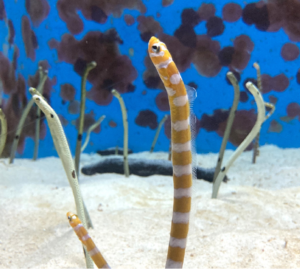

今日のいきもの

チンアナゴ
体のほとんどを砂の中に隠して水の流れに向かって顔を出し、 流れてくるプランクトンを食べる臆病な魚で、顔が犬の「狆（チン）」に似ていることからその名前が付けられているよ！ エサが流れてくる場所をめぐって、仲間同士で口を開けて威嚇し合うこともあるみたい💦
特徴
- 黒い斑点の模様は一匹ずつ少しずつ違うため、人の指紋のように見分けることができるよ！
- 普段は砂で隠れているけど、全長は30〜40cmほどあるよ！
- 野生のチンアナゴはインド洋や西太平洋の暖かい海に生息しているよ！